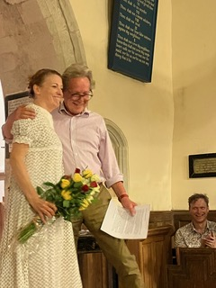

What's New
Jane Austens Life and Work - The Unassuming Debut: How Jane Austen Published Anonymously

Sense and Sensibility - By A Lady - Published 1811.
When "Sense and Sensibility" was published in 1811, it bore the simple credit "By A Lady." This choice was common for female authors of the time, who often faced prejudice in the literary world. Jane Austen, valuing her privacy, chose to remain anonymous.
Despite the lack of a name on the cover, the novel was well-received and earned Austen £140. Critics and readers alike praised its engaging characters and the nuanced exploration of emotion versus reason.
Austen's brother Henry played a vital role in her publishing journey, acting as her informal agent. Even as her fame grew with subsequent novels like "Pride and Prejudice" and "Mansfield Park," she continued to publish anonymously. It wasn't until after her death in 1817 that her family revealed her identity, cementing her place in literary history.
Sources
- Jane Austen's letters, ed. Deirdre Le Faye, 4th edition (Oxford: Oxford University Press, 2011)
- Tomalin, Claire. "Jane Austen: A Life." (New York: Alfred A. Knopf, 1997).
Spring/Summer 2024
It has been a very wet spring. A surprisingly warm and wet February, a cold start to March, a warm start to April then a chill, which has upset the farming community, and an unseasonably cold start to May. I am still lighting fires in my house in the evening.
As I write it is raining, the water table level has risen over much of Hampshire. The usually dry bournes are in full flow. I have never seen the River Lyde so full and as for the River Test... its source seems to have moved from Ashe to Deane and beyond. In fact, the tiny hamlet of Deane has been awash with water bubbling up from the chalk ground, the farm has flooded and the road has been closed to traffic.
The parish of Deane was offered to George Austen, but he never liked it, claiming that, "…no two floors were on the same level", and appointed a curate until Steventon Rectory became available. He was the rector of two parishes, a practice known as pluralism. Clerics could be a rector of more than one often distant parish and take the rents or tithes from the distant parish and appoint a curate and pay him £50 a year to do the hatch, match and despatch work.
The difference between a rector and a curate is critical in understanding Austen's novels. To become a cleric an often cursory viva with a bishop was taken then one had to search for a decent living. Bill Bryson in At Home writes of one rector having 28,000 acres in Cambridgeshire. The Austen family had 250 acres, a comparatively modest living.
It was the landowner who appointed the rector, so nepotism was rife. As a cousin of the wealthy Knight family it was how George Austen obtained his living. It is also the reason that Jane Austen was invited to dance in the grand country houses as she was of the same social class as landowners. As the daughter of a mere curate she may not have been invited... had she been brave enough to travel through the spring floods.
Februarys flooding in the village of Deane.
Winter 2023/Spring 2024
Actor Stacy Hart.
Stacy Hart, Phil Howe and Director Nick Ash during rehearsals.
Twelve Hours has been performed three times this year so far with hopes of more to come.
A sold out performance at Wooton St Lawrence, North Hampshire was generously supported by Dame Emma Thompson who gave funds to support the play and the village church’s improvement programme.
St Lawrence Church community want to install a kitchen and toilet facilities to make it a better, more convivial social space.
I sent Emma Thompson a copy of Twelve Hours and she said, “Thank you for the play which I read and loved. I hope it gets performed regularly by many others - it’s funny, pithy, lucid and very moving. Very Jane”.
Potential audience members were turned away as the play sold out again in September at Proteus Creation Space in Basingstoke with so many favourable comments from the audience that there may be a repeat show soon.
The following evening the play went to All Saints Church, Dummer, again all tickets sold out and the play had great audience feedback. This has encouraged actor Stacy Hart to take the show under her wing and plans to take it to a wider audience in the UK.
The Rt Honourable Dame Maria Miller MP was present and liked the play so I now have double Dame approval! As a result of this performance a copy of the play has been sent to France for a potential show there and it has had a Stateside premiere in Florida.
Director Nick Ash is equally enthusiastic about taking the show on the road. There are promises of more performances in the local area next year to celebrate Jane Austen’s links with Hampshire.
More information about future venues, forthcoming performances and ticket availability can be found on the Twelve Hours website.
Winter 2022/Spring 2023
An exciting direction with our latest update and one we hope will be popular with all the fans and enthusiasts of Jane Austens writing and her life!
On Friday April 14th there will be a special performance of Phil Howes unique short play Twelve Hours, the story of Jane Austen’s engagement. The performance will be at the beautiful and ancient St Lawrence Church, Wootton St Lawrence, near Basingstoke.
St Lawrence church is a place of worship and a site of historical importance. The Friends of St Lawrence intend to provide a more welcoming space that is open, accessible to all and flexible enough to enable worship and other community initiatives to flourish. The Friends aim to provide toilet facilities and a kitchen to encourage greater use of the building for drama, art, exhibitions and music. The church will be a space to be used by a growing local community.
To raise funds for this worthy initiative, Phils play, Twelve Hours, will be performed again in the church on Friday 14th April 2023 at 7.30pm. The play is about a real event in Janes life, her acceptance of an offer of marriage from Harris Bigg-Wither, the owner of the Manydown estate, and how she came to reject the offer twelve hours later.
It is a big decision to say, “Yes,” to a marriage proposal. It is an even bigger decision to change your mind overnight.
The one woman monologue recreates an intense event in Janes life that is often overlooked. This drama is approached with sentiment, humour and respect.
The work is to be performed at St Lawrence Church by actor Kerry Fitzgerald, who trained at Royal Central School of Speech and Drama and directed by Nick and Becky Kitter of Scratchbuilt Productions. The performance is promoted by the Friends of St Lawrence, for more information contact Teresa Bates on 07771540709 or e-mail friends@oww.church
The play, which lasts approximately 55 mins will be performed as a costumed read-through. Phil Howe will be available afterwards for a Q&A session and signings of the book, Twelve Hours.
Doors open 6.30pm, performance starts 7.30pm.
Tickets are £15 and are available from https://TwelveHoursPlay.eventbrite.co.uk
Phil and Kerry rehearse in the beautiful surrounds of St Lawrence Church.